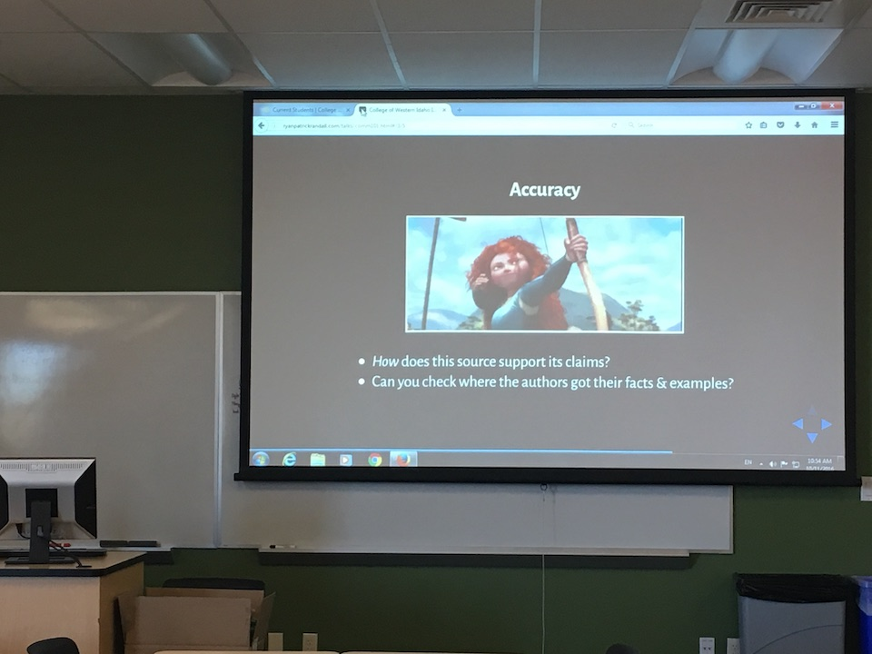
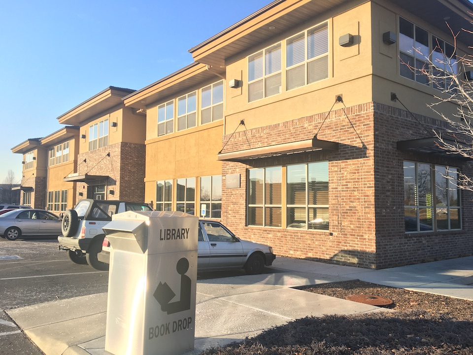

Multimedia Development and User Experience Librarian Presentation
Ryan Randall
2021-06-04
If you'd like to follow along, browse to: https://www.ryanpatrickrandall.com/talks/bsu.html
My Goals for This Presentation
- Share my background
- … and my approach to instruction
- Showcase a learning object
- … and my process for creating & assessing it
- 30 minutes for the presentation, 15 minutes for Q & A
Hello!
CWI's Instruction Coordinator & Faculty Outreach Librarian

At CWI

Inside the Library:
Instruction Coordinator

Outside the Library:
Faculty Outreach
Before CWI…
Composition & Other Courses
Writing Centers
User & Space Studies
Continuations
- Agency
- Inclusion
- Lifelong Learning
Continuations
Constructivist Pedagogy
We build understanding from what we bring
Teaching for Transferability
Reflecting on processes
 Photo by Alice Donovan Rouse via Unsplash
Photo by Alice Donovan Rouse via Unsplash
CWI's Research Basics Badges
Context
- "Flipped" instruction
- Baseline knowledge
- Portability improves student experience
- 45,000 badges earned Jan. 2017—Mar. 2021
CWI's Research Basics Badges
Content
- "Crossed the Threshold"
- "Find It!"
- "Source Sifter" (formerly "Website Crusher")
- "Asked a Librarian"
CWI's Research Basics Badges
Development
ADDIE Model
- Analysis
- Design
- Development
- Implementation
- Evaluation
Angiah L. Davis. Using instructional design principles to develop effective information literacy instruction: The ADDIE model C&RL News, Vol 74, No 4, 2013.
CWI's Research Basics Badges
Details
ADDIE Model
- Analysis: Foundations without frustrations
- Design: "Flipped" model & in-class activities
- Development: Blackboard for portability
- Implementation: Tested prototypes with library student workers
- Evaluation: Currently emphasize summative, not formative
Angiah L. Davis. Using instructional design principles to develop effective information literacy instruction: The ADDIE model C&RL News, Vol 74, No 4, 2013.
Source Evaluation Badge
"Website Crusher" (original version)
- Video posing the problem
- Present using Wikipedia as a springboard
- Present CRAAP Test as an evaluative model
- Demonstrate applying the CRAAP Test
- Quiz
Source Evaluation Badge
Overall Assessment Process
- IRB approved study of student learning
- "Badgers" & "Non-Badgers"
- Quantitative & Qualitative
- Screencast of search, then "think aloud" interview
- Scored selected sources according to rubric
- Coded interviews according to CRAAP facets
Source Evaluation Badge
Overall Assessment Findings
Quantitative
- Some notable gains, less impact in others
- Greatest increase in "Reflects awareness of library value"
- "Badgers" also more likely to seek out sources through library
- No distinction between "badgers" and "non-badgers" regarding source evaluation
Source Evaluation Badge
Overall Assessment Findings
Qualitative
- Students referred to concepts like credibility or accuracy, but could not effectively apply these concepts
- Students struggled to determine credibility and authority
- Students seemed motivated by what "caught their eye"
- CRAAP facets devolved into a "checklist" of speaking points, not practiced as an evaluation strategy
Source Evaluation Badge
Overall Assessment Paper
"Student Achievement Unlocked!: The Effectiveness of Badging in Community College Library Instruction" by Amanda Nida, Ryan Randall, and Kim Reed
Source Evaluation Badge
Source Sifter (revised version)
Overview of the content, describing learning outcomes and intended time to complete
Source Evaluation Badge
Source Sifter (revised version)
1. Google Slides introducing the SIFT Moves, a newer model that emphasizes lateral searching and recognizes information overwhelm
Source Evaluation Badge
Source Sifter (revised version)

2. Two pages with infographics and explanations:
Web Sources and Information Timeline
Web Sources: URL Suffixes
Source Evaluation Badge
Source Sifter (revised version)
Link to a screenreader-accessible equivalent for the infographics
Approach based on the DIAGRAM Cener's Making Images Accessible guide for infographic accessibility
Source Evaluation Badge
Source Sifter (revised version)

3. Video demonstrating how to actually apply the SIFT Moves, starting with Google, the Google Preview feature, and then how to quickly use Wikipedia for lateral source evaluation and learning about consensus views of a source
Source Evaluation Badge
Source Sifter (revised version)
4. Quiz for summary evaluation, with questions targeted to misunderstandings identified during badge assessment
Revisiting Our Goals
- Share my background and instructional approach
- Agency
- Inclusion
- Lifelong Learning
- Constructivist Pedagogy
- Teaching for Transferability
- Showcase a learning object and my process for creating & assessing it
Sources
Angiah L. Davis. Using instructional design principles to develop effective information literacy instruction: The ADDIE model C&RL News, Vol 74, No 4, 2013.
Amanda Nida, Ryan Randall, and Kim Reed. "Student Achievement Unlocked!: The Effectiveness of Badging in Community College Library Instruction", ACRL2021 Conference Proceedings, 2021.
Thank You!